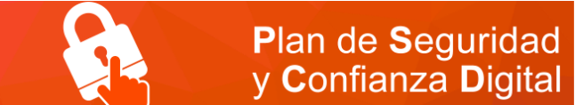

La vida digital forma parte de la vida cotidiana
El alumnado aprende, se comunica y construye relaciones en Internet. Necesita criterios para tomar decisiones seguras también fuera del aula.

El PSCD en LeónRecursos para los centrosPlan de Seguridad y Confianza Digital
Ideas, materiales y orientaciones para trabajar la seguridad, la convivencia y el bienestar digital en los centros educativos.
Qué encontrarás
Esta web reúne propuestas, materiales y enlaces de confianza para favorecer un uso seguro, crítico y responsable de la tecnología.
Los contenidos pueden utilizarse en tutorías, proyectos de centro, actividades de aula y acciones dirigidas a las familias.
Qué es el PSCD
El Plan de Seguridad y Confianza Digital es una iniciativa de la Consejería de Educación de Castilla y León dirigida a la comunidad educativa. Promueve un uso seguro, crítico y responsable de Internet y ayuda a prevenir y afrontar riesgos relacionados con la privacidad, la convivencia, la identidad digital y el uso de los dispositivos.
Conocer el plan oficial ↗Por qué educar en seguridad digital
El alumnado aprende, se comunica y construye relaciones en Internet. Necesita criterios para tomar decisiones seguras también fuera del aula.
Reconocer riesgos, proteger los datos y saber pedir ayuda reduce la vulnerabilidad ante fraudes, acoso, contenidos dañinos o usos problemáticos.
Los mensajes coherentes y el diálogo abierto facilitan que niños, niñas y adolescentes comuniquen sus dudas e incidentes sin miedo.
Respetar la intimidad, contrastar la información y convivir responsablemente ayuda a participar en la sociedad digital con autonomía.
Ideas para el centro
Propuestas sencillas que cada centro puede adaptar a sus etapas, grupos y necesidades.
Trabaja privacidad, contraseñas, convivencia, pensamiento crítico, bienestar digital y respuesta ante riesgos mediante actividades breves y participativas.
Selecciona contenidos adecuados para cada grupo y acuerda criterios comunes para prevenir riesgos y responder de forma coordinada.
Comparte pautas claras y pequeños retos que ayuden a continuar en casa la conversación sobre el uso responsable de la tecnología.
Una fórmula sencilla
Elige un tema, abre un diálogo con el grupo y termina con una creación útil: un decálogo, una campaña, un pódcast, un cartel o un vídeo breve.
Una cita cada curso
Cada año, habitualmente entre febrero y abril, el alumnado puede convertir lo aprendido sobre seguridad y confianza digital en un vídeo breve, original y útil para otras personas.
Dirigido a 5.º y 6.º de Primaria, ESO y FP Básica. Las fechas, el tema y los requisitos concretos se publican en la convocatoria de cada curso.
Revisar con una cuenta de demostración qué información muestra un perfil y proponer una configuración más segura.
Privacidad · Desde 5.º de PrimariaRepresentar qué acciones dejan rastro digital y decidir cuáles ayudan o perjudican a la reputación futura.
Identidad digital · SecundariaComparar dos páginas sobre el mismo tema, identificar autoría y evidencias, y justificar cuál resulta más fiable.
Pensamiento crítico · Primaria y SecundariaResolver casos breves sobre imágenes de otras personas, etiquetas, ubicación y consentimiento.
Convivencia · Desde 3.º de PrimariaPreparar en casa un acuerdo realista sobre horarios, espacios, pausas, ayuda y respuesta ante problemas.
Bienestar digital · FamiliasClasificar situaciones: detenerse, guardar pruebas, bloquear y comunicarlo a una persona adulta.
Prevención · Todos los nivelesHábitos seguros, seguridad en la Red, peligros de Internet, netiqueta y tecnoadicciones.
Para trabajar el PSCD
Documentos complementarios para preparar actividades con el alumnado y orientar a las familias.
Orientaciones sobre tiempos de uso, búsqueda de información, privacidad, propiedad intelectual, riesgos y acompañamiento familiar.
Abrir guía ↗Presentación de apoyo sobre datos personales, huella digital, reputación, geolocalización y protección de terceros.
Descargar presentación ↓Recurso independiente
El archivo de restauración, las instrucciones, las guías técnicas y los vídeos están reunidos en este apartado.
Archivo de restauración
Paquete completo para restaurar el curso en el Moodle del centro. La instalación debe realizarla una persona con permisos de administración.
Instalación
Sigue este orden para evitar los problemas más habituales.
Guarda el archivo .mbz y súbelo al OneDrive personal del administrador.
El paquete supera los 100 MB y debe restaurarse desde el selector de OneDrive de Moodle.
Revisa el nombre, la categoría, la fecha de inicio y la inclusión de usuarios matriculados.
Crea las copias necesarias y matricula al profesorado y al alumnado del centro.
Documentación técnica
Restauración, selección desde OneDrive, ajustes y comprobaciones finales.
Abrir guía ↗Objetivos, contenidos, metodología, evaluación, competencia digital y atención a la diversidad.
Abrir guía ↗Tamaño del paquete, requisitos y recomendaciones para la persona administradora.
Abrir documento ↗Documento original con los accesos a los cuatro tutoriales.
Abrir documento ↗Aprende paso a paso
Ayuda rápida
Es normal: supera el límite de 100 MB. Súbelo al OneDrive personal del administrador y selecciónalo desde el repositorio de OneDrive de Moodle.
La persona administradora del Aula Moodle del centro. Después podrá asignar permisos al profesorado.
No, salvo que exista un motivo concreto. Desmarca esa opción para evitar incorporar al personal externo de la copia original.
Sí. El administrador puede realizar tantas copias como necesite el centro y organizarlas en una categoría propia de PSCD.
Para seguir explorando
Accesos directos para ampliar contenidos, preparar actividades o solicitar orientación.